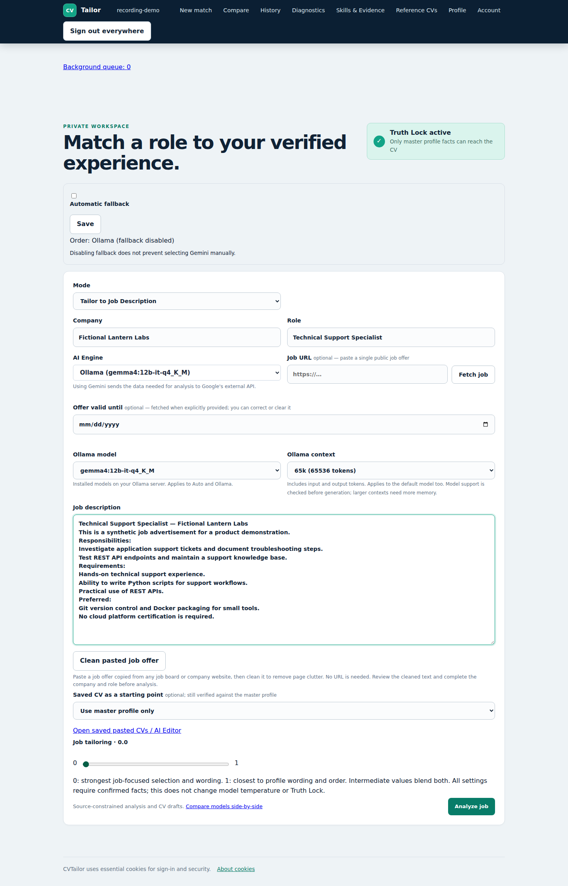
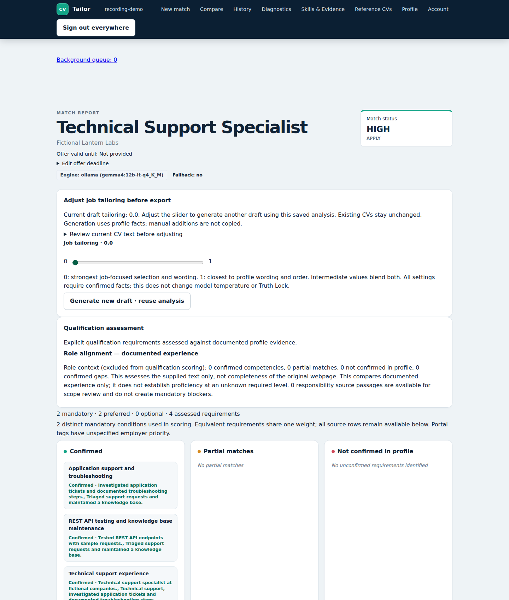
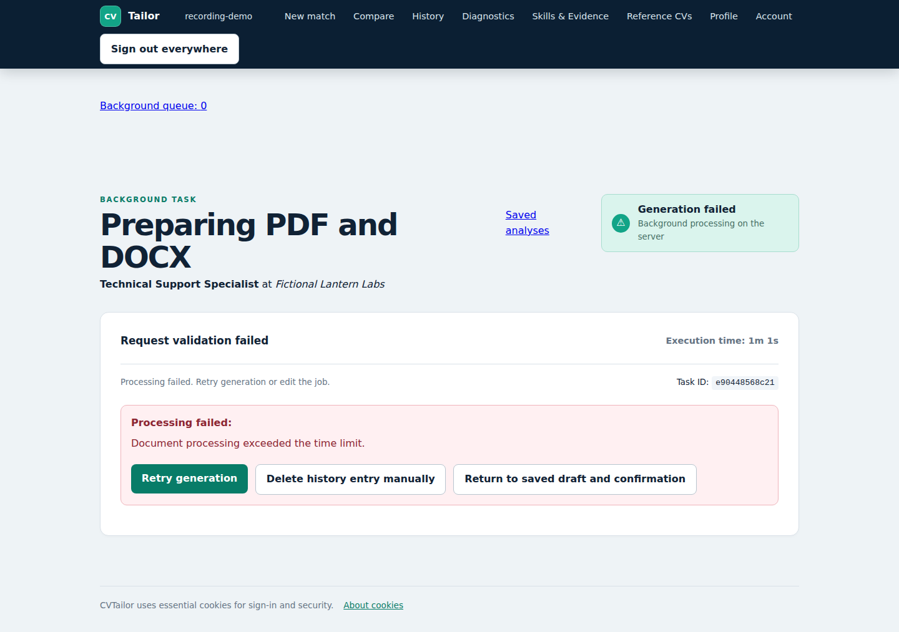
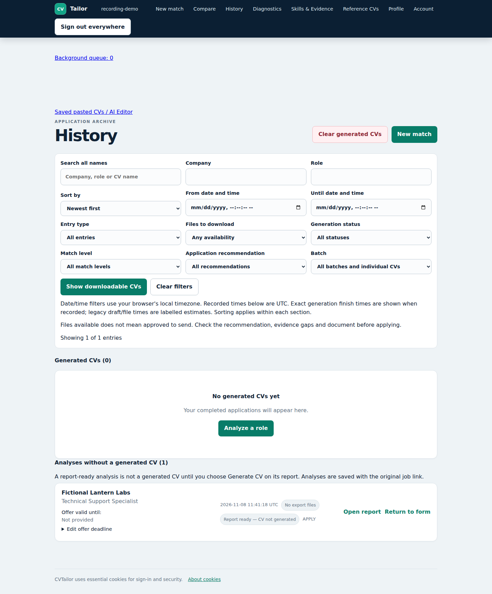

CVTailor — working demo
This gallery showcases the capabilities of CVTailor, a locally-run AI
resume tailoring engine.
Synthetic Profile: Alex Example
Model Stack: Local Ollama gemma4:12b-it-q4_K_M
(No cloud fallbacks)
Capture Date: 2026-11-08
Status Warning: Analysis and CV draft succeeded, in-app PDF/DOCX export timed out;
no successful end-to-end export claimed.
Video 1: Analysis and CV draft generation · approximately 130 seconds, including AI waiting time. Silent, normal-speed capture; ends as the export attempt starts.
Video 2: Saved report review and export timeout · approximately 39 seconds. A separate silent capture, at normal speed; no new AI generation.



